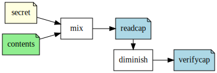
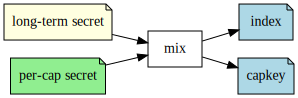

Capability-based Security
@lvh
_@lvh.io
Slides
https://www.lvh.io/CapabilityBasedSecurity
Introduction
Who am I?

　
Talks in most of the world
Talks in Poland
This talk
This talk
- Turning stuff inside out
- All of the hobby horses
- Information security!
- Cryptography!
- Distributed systems!
Auth________‌n
　

Access a repo
https://github.com/RackSec/secret
- GitHub figures out who you are
- GitHub checks if you should have access
Pattern
- Authentication f: creds ↦ ident
- Authorization f: ident ↦ access
What's wrong with that?
Two issues we'll discuss:
- Fails open
- Imprecise
Failure mode
- Legitimate user can't access (fail close)
- Illegitimate user can access (fail open)
Failing open ⇒ fragile
- Code execution ≡ game over
- Common:
pickle- Weird machines
- …
Not very exciting
- Sure, running Python ≡ running Python
- Does it have to work this way?
Imprecise authorization
Waffle.io
OAuth authorization flow
What does "repositories" mean?
Not GitHub/Waffle.io's fault
OAuth's scope parameter encourages this
AutoScale
- Manages groups of servers
- Scale up and down easily
Scale on behalf of customers
- Should work as if user did it directly
- Billing, audit logs, limits…
As if the user did it themselves
- Easiest solution?
- Impersonate them!
- How do I impersonate a user?
- Admin credentials (of course!)
☢ ☢ ☢ ☢ ☢
Yay admin credentials
- Accidentally commit to (public!) repo?
- On development machine for staging runs?
A lot of people want those magic keys!
☠THREAT LEVEL: MOSSAD â˜
That's it, we're screwed
We are going to be Mossad'ed upon
☠THREAT LEVEL: MOSSAD â˜


Pies in the sky

What do I want?
- API key per customer
- Limited use (time, # of uses)
- Trivial to rotate, revoke
- With flavors: {1, 2, 3}
- With images: {A, B}
- Only in data center α
- Only delete servers made this way
Principle of least privilege
"Don't give X more access than X needs"
Applied to real life
If you owe someone 100 zł, do you:
- give them a stówka/make a bank transfer?
- give them your bank credentials?
Principle of least privilege
But our tools are imprecise!
- Authentication first class object
- Authorization flows from it
Copernican revolution
- Authorization first class object
- (Authentication may flow from it)
Capabilities
- First-class object
- Precise
- Can be attenuated
- Can be communicated
- Might be contained
Can not be forged
Attenuation (a.k.a diminishing)
- In: cap that can do {X, Y, Z}
- Out: cap that can only do {X, Y}
Object capabilities
To use e.g. sockets, you need:
socket&osmodules- Reference to a socket
OOP: making objects do stuff
Control references to objects
⇓
Control what code can do
Can we fix access control?
- Probably not; already a mess
- Scales poorly with fine granularity
Dependently typed problem
- Most systems express roles, classes
- Create servers, delete servers
- (That's broader than usual!)
- That's still way too broad, I want:
- Can create server with image A, &c
- Can delete server made this way
Let's settle for ugly & imprecise
- Roles are the path to the dark side
- Roles lead to Active Directory
- Active Directory leads to anger
- Anger leads to hate
- Hate leads to suffering
Finally, why would you want that?
Cryptography, not pinky swears
How do we do that?
"Easy" mode: local
- Memory safe languages
- ASLR-like, Erlang-like
Crypto, not pinky swears
Tahoe-LAFS
Icecap
Icecap
Why don't we do that already?
Lots of alternatives
- Classic privilege dropping
- POSIX capabilities
CAP_NET_BIND_SERVICE&c
seccomp,AppArmor,SELinux, …tame(),securelevel, …- …
Oh my, there are so many
- That should probably tell you something
- Mostly opt-in or de-facto opt-in
We use caps already, sort-of
- Webhooks (no confinement)
capsicum(kernel, no crypto)
Just not consistently
How many of you:
- … have Python software running in production?
- … that can only access the resources it needs?
- … have used object-capability systems?
- … are running them in production now?
We've tried this
- Programming languages: E, Caja…
- Operating systems: EROS, Coyotos, (se)L4…
- Other systems: Tahoe-LAFS…
Really great features, e.g. in E
- Secure (crypto, not pinky swears)
- Persistent
- Distributed (a la Erlang)
- Deadlock free
It didn't pan out
Has anyone heard of any of these systems?
Why didn't it pan out?
(Reality is complex, I'm simplifying, theorizing)
- Backwards compatibility is pretty great
- Nobody wants to re-write their project
- Security often not a priority
- (see Building Secure Systems, PyCon 2015)
How can we do better?
UX UX UX UX UX UX UX UX UX UX UX UX UX UX UX UX UX UX UX UX UX UX UX UX UX UX UX UX UX UX UX UX UX UX UX UX UX UX UX UX UX UX UX UX UX UX UX UX UX UX UX UX UX UX UX UX UX UX UX UX UX UX UX UX UX UX UX UX UX UX UX UX UX UX UX UX UX UX UX UX UX UX UX UX UX UX UX UX UX UX UX UX UX UX UX UX UX UX UX UX UX UX UX UX UX UX UX UX UX UX UX UX
Seriously crypto people
(Yes, this includes me)
- Most programmers know not to do crypto
- But cryptographers still do UX… poorly
Cooperation & diversity FTW
- Different expertise
- More points of view
- More experiences
Wrap-up
Thanks, everyone!
- Everyone for putting up with my rant
- PyCon PL organizers for inviting me 💖
Questions?
Slides
https://www.lvh.io/CapabilityBasedSecurity